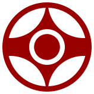

Das Kanku ist das Symbol des Kyokushin Karate
Willkommen auf kyokushin-mannheim.de
Dies ist die Website des ersten Karate-Dojos in Mannheim, das den Kyokushin-Stil praktiziert. Kyokushin bedeutet “endgültige Wahrheit”. In den frühen 50er Jahren von Masutatsu Oyama, oder kurz Mas Oyama, begründet, ist Kyokushin der härteste Karatestil, den es weltweit gibt.
Auf diesen Seiten findet Ihr alles Wissenswerte über unseren Stil und unser Dojo.